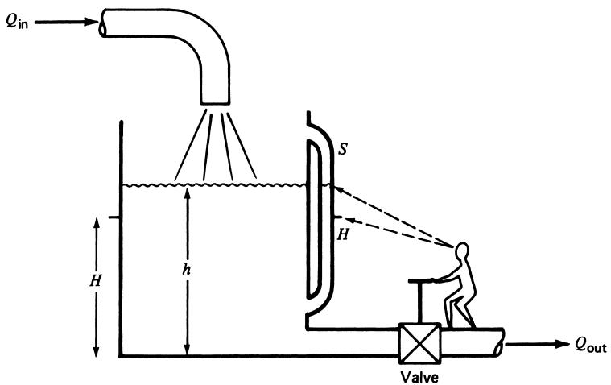
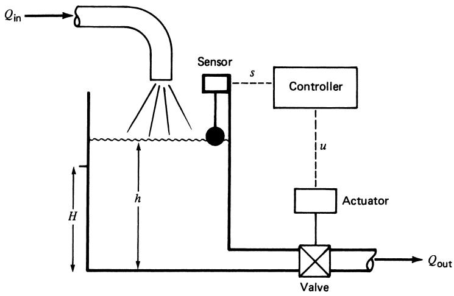
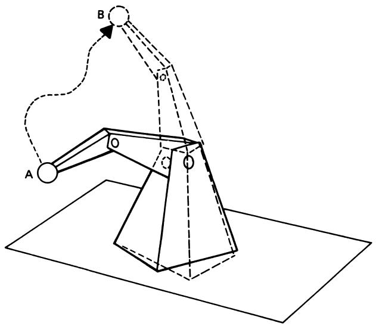
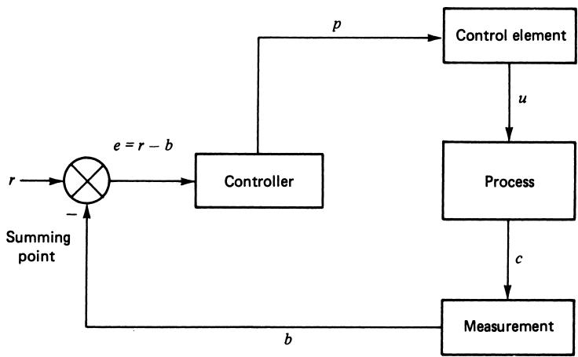
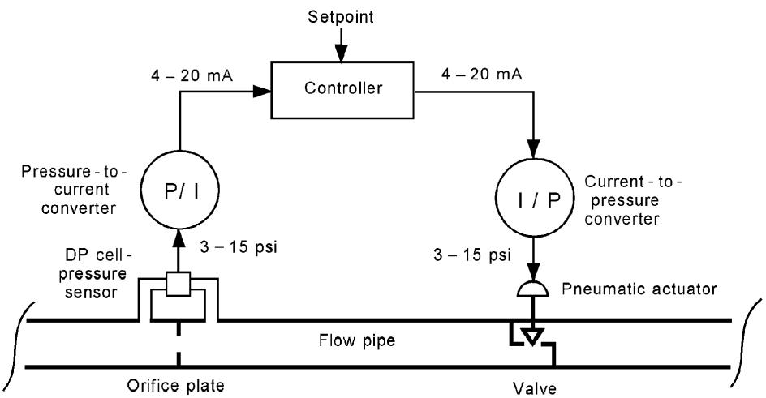
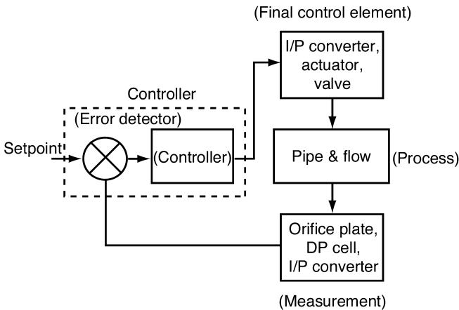

At what value of \(h\) will the level stabilize due to self-regulation?
Example 1: Solution
At steady state (self-regulation):
\[
Q_{\mathrm{out}} = Q_{\mathrm{in}}
\] So
\[
2 = 1.156\sqrt{h}
\] Solve for \(h\):
\[
h = \left(\frac{Q_{\mathrm{out}}}{K}\right)^2
= \left(\frac{2\;\mathrm{gal/min}}{1.156\;(\mathrm{gal/min})/\mathrm{ft}^{1/2}}\right)^2
\approx 3\;\mathrm{ft}
\]
So the tank level will stabilize at 3 ft.
Note
This is a process property, not a controlled setpoint. If you changed \(Q_{\mathrm{in}}\), the self-regulated level would change.
From Self-Regulation to Human Control
Suppose we want to maintain the level at a specific value \(H\), regardless of \(Q_{\mathrm{in}}\).
We add:
A sensor to measure level, via a sight tube \(S\).
A valve on the outlet to adjust \(Q_{\mathrm{out}}\).
The human strategy:
Read the actual level \(h\) on sight tube \(S\).
Compare \(h\) to the target level \(H\).
If \(h > H\): open valve → \(Q_{\mathrm{out}}\) increases → level falls.
If \(h < H\): close valve → \(Q_{\mathrm{out}}\) decreases → level rises.
Repeat small adjustments to keep level near \(H\).

Human regulating tank level via sight tube and valve
Figure 2: Human-aided level control using a sight tube and valve.
From Human to Automatic Control
To automate, we replace the human with instruments.
Automatic system elements:
Sensor: measures level and outputs signal \(s\) (voltage, current, pressure).
Controller: electronic or computer-based device that:
Receives measurement \(s\),
Knows the setpoint \(H\),
Computes control signal \(u\).
Actuator + Valve: receive \(u\) and adjust outflow.

Automatic level control with sensor, controller, actuator, valve
Figure 3: Automatic level-control system replacing the human.
When such automatic control is applied to processes, we call it process control.
Servomechanisms vs Process Control
Another key class of control systems: servomechanisms.
Objective: make a variable follow a time-varying reference.
This is tracking control, not just regulation to a constant setpoint.
Example:
Robot arm motion from point \(A\) to point \(B\).
Servomechanism traits:
Controlled variable: position, angle, velocity, etc.
Reference \(r(t)\) is a trajectory over time.
Controller forces actual motion to follow \(r(t)\).

Robot arm moving from A to B using servomechanisms
Figure 4: Servomechanism-based robot arm control.
Note
Process control: keep variable near constant setpoint. Servomechanism: make variable track a varying reference.
Discrete-State Control Systems
Not all control is about continuous variables.
Discrete-state control: controls sequences of events (on/off, start/stop).
Example: Paint manufacturing sequence:
Fill tank to a certain level.
Heat mixture to set temperature (with a temperature control loop).
Maintain temperature for a set time.
Start pump to transfer to next tank.
Start mixer; mix for specified duration.
Each step is:
On or off, true or false, started or stopped.
These systems are:
Often implemented using PLCs (Programmable Logic Controllers).
Described using ladder logic, state machines, etc.
Tip
Think of discrete-state control as the “logic and sequencing layer” above continuous process control loops.
Generic Process-Control System Elements
To study control systems in a general way, we identify functional elements:
Process / Plant
Measurement (Sensor + Conditioning)
Error Detector
Controller
Control Element (Final Control Element)
Actuator
We’ll see how these appear in a block diagram, independent of the physical details.
Element 1: Process (Plant)
The process (or plant) is what we’re trying to control.
In the tank example:
Tank, fluid, inlet/outlet pipes, and their dynamics.
General characteristics:
May involve many variables (temperature, pressure, flow, composition).
May be:
Single-variable process (control one main variable), or
Multivariable process (several interrelated variables).
Note
In ECE, “plant” could be a motor, a DC-DC converter, an antenna system, etc.
Element 2: Measurement & Sensor
To control a variable, we must measure it.
Measurement:
Conversion of physical variable → analog signal:
Pneumatic pressure,
Electrical voltage/current,
Digital code.
Sensor: device that performs the initial measurement and energy conversion.
Example: level sensor converting height to 4–20 mA.
Note
All sensors are transducers, but not all transducers are sensors.
Sensor: physical variable → signal.
Transducer (general): any signal form → another signal form.
Element 3: Error Detector
We compare the setpoint\(r\) to the measured value\(b\).
Error signal:
\[
e = r - b
\]
\(e\) has magnitude and sign (polarity).
Although often embedded inside the controller, we conceptually separate it as:
A summing junction or subtractor.
Important
Error is the core quantity the controller reacts to.
Element 4: Controller
The controller receives the error\(e\) and decides how to act.
Roles:
Evaluate error over time.
Output control signal \(p\) (or \(u\), depending on notation) to drive the process.
Implementation forms:
Human operator (early systems).
Pneumatic or analog electronic circuits.
Digital controllers: microprocessors, PLCs, embedded systems.
Typical controller logic (later topics):
Proportional (P), Integral (I), Derivative (D) actions → PID control.
Tip
The controller “translates” error into an appropriate manipulation of the process.
Element 5: Control Element & Actuator
Final Control Element (Control Element):
The device that directly influences the process variable.
Examples:
Control valve.
Variable-speed drive for a motor.
Electric heater.
Actuator:
Intermediate device converting controller’s low-energy signal → physical action.
Examples:
Pneumatic diaphragm actuator driving a valve.
Motorized valve operator.
Power electronics controlling a motor.
Note
Actuator: small signal in → big energy out.
Generic Process-Control Block Diagram

Generic block diagram of a feedback control loop
Figure 5: General block diagram of a control loop.
Signals:
\(r\): reference (setpoint).
\(c\): controlled variable (process output).
\(b\): measured value (feedback signal).
\(e = r - b\): error.
\(p\): controller output to control element.
\(u\): manipulated variable into process.
Example: Flow-Control Loop (Physical vs Block Diagram)
Physical system

Physical diagram of flow control loop
Physical flow control loop:
Orifice plate (creates differential pressure).
\(\Delta P\) transmitter → 3–15 psi signal.
P/I converter → 4–20 mA to controller.
Controller output: 4–20 mA.
I/P converter → 3–15 psi to actuator.
Pneumatic actuator → control valve.
Block diagram abstraction

Block diagram of the same control loop
Block diagram:
Measurement block: Orifice, transmitter, P/I.
Controller block.
I/P, actuator, valve as control element.
Process: pipe flow system.
The Feedback Loop Concept
Notice the closed path of signals in Figure 5:
Process output \(c\) is measured as \(b\).
Error \(e = r - b\) is computed.
Controller adjusts input \(u\) to process.
Process output changes, and the cycle repeats.
This is a feedback loop.
The system uses information about its output to continuously correct itself.
Important
A process-control loop is typically a feedback loop. Feedback can both improve performance and cause instability if misused.
Evaluating Control System Performance
We now ask: How well is the control system working?
We use error as the performance measure:
\[
e(t) = r - c(t)
\tag{1}
\]
Three main objectives:
Stability
Good steady-state regulation
Good transient regulation
Tuning the control loop = adjusting it to balance these objectives.
Objective 1: Stability
Purpose of control: regulate a variable by acting on the process.
If the controller acts too aggressively or incorrectly, it can cause instability.
Illustration:
Unstable response due to control system
Figure 7: Initially, uncontrolled drift. After control is turned on, variable moves to setpoint, then later develops growing oscillations due to instability.
Warning
A control system can cause a system to become unstable. Tight control (fast response) often risks instability.
Objective 2: Steady-State Regulation
Steady-state regulation:
How small is the error after transient effects die out?
Often specified as an acceptable band:
Allowable deviation \(\pm \Delta c\) around setpoint.
Example:
Setpoint \(150^\circ\mathrm{C}\).
Allowable band: \(148^\circ\mathrm{C} \le c \le 152^\circ\mathrm{C}\).
Goal: Minimize steady-state error while maintaining stability.
Note
Steady-state performance is about accuracy of long-term regulation.
Objective 3: Transient Regulation
Transient regulation asks:
How does the system behave when a sudden change occurs?
Two main types of transients:
Setpoint change:
Example: change temperature setpoint from \(150^\circ\mathrm{C}\) to \(160^\circ\mathrm{C}\).
Disturbance/change in other variables:
Example: sudden change in inlet flow or feed composition.
Key questions:
How large is the temporary deviation from desired value?
How long does it take to return close to the setpoint?
This is often called the transient response.
Important
Good transient regulation = small overshoot and short time to settle.
Overall Evaluation Criteria
We evaluate a control system by:
Ensuring stability (no unbounded oscillations).
Assessing steady-state error (accuracy of long-term regulation).
Assessing transient response:
To setpoint changes.
To disturbances.
The process of adjusting the control loop to meet these criteria is called tuning.
Damped (Overdamped) Response
In one tuning approach, we desire a damped response:
Error does not oscillate around the setpoint.
It moves in one direction toward the new value and stays there.
Damped response to setpoint and transient changes
Figure 8: Damped responses.
Measures:
Duration\(t_D\):
For setpoint change: time from 10% to 90% of final change.
For transient: time from disturbance start until variable is within 4% of reference again.
Maximum error\(e_{\max}\) during the transient.
Tradeoffs:
You can get smaller \(e_{\max}\) at cost of larger \(t_D\), and vice versa.
Cyclic (Underdamped) Response
Another tuning approach allows oscillatory (cyclic) transient response.
Cyclic response to setpoint and transient changes
Figure 9: Setpoint and disturbance responses with oscillations.
Measures:
Maximum error\(e_{\max}\).
Settling time\(t_D\): time from when error first exceeds allowable band until it returns within band and stays there.
Again, tuning changes:
Number of oscillations.
Amplitude of oscillations.
Settling time.
Warning
Cyclic response is acceptable only if oscillations are damped and stay within acceptable error limits.
Quantitative Cyclic Criteria: Minimum Area & Quarter-Amplitude
Two standard cyclic tuning criteria:
Minimum Area Criterion
Define error-area:
\[
A = \int |e(t)|\,dt
\tag{2}
\]
Tune controller to minimize\(A\) for a given excitation.
Interpreted as minimizing the total “discomfort” or cumulative error over time.
Shaded region = area under \(|e(t)|\).
Quarter-Amplitude Criterion
In oscillatory response, each peak amplitude is ¼ of the previous:
Historically popular in process control tuning (e.g., Ziegler–Nichols).
Minimum area and quarter-amplitude criteria
Figure 10: Minimum area and quarter-amplitude response shapes.
Interactive Exercise: Explore a Simple First-Order Response
Use this interactive code block to see how a simple first-order system responds to a step change in setpoint.
Adjust time constant and gain to see how they affect speed and error.
viewof tau = Inputs.range([0.1,10], {step:0.1,value:2,label:"Time constant τ"})viewof k = Inputs.range([0.1,5], {step:0.1,value:1,label:"Gain K"})
Summary / Key Points
Control systems force environmental or process variables to have desired values.
Process control focuses on regulating variables (like level, temperature, flow) to constant setpoints despite disturbances.
Servomechanisms perform tracking of time-varying references (e.g., robot arm motion).
Discrete-state control systems manage sequences of events (on/off, start/stop) and are often implemented using PLCs.
A generic process-control loop includes:
Process (plant).
Measurement & sensor.
Error detector \(e = r - b\).
Controller.
Control element (final control element) and actuator.
The loop forms a feedback system, where measured output is used to adjust input.
Control performance is evaluated via:
Stability (no unbounded oscillations).
Steady-state regulation (small long-term error).
Transient response (overshoot, settling time).
Tuning adjusts controller parameters to trade off between speed, error magnitude, and stability, using criteria such as minimum area or quarter-amplitude decay.
Formula & Notation Summary
Key variables and formulas used in this session:
Flow–level relation in tank:
\[
Q_{\mathrm{out}} = K\sqrt{h}
\]
Self-regulated level for given \(Q_{\mathrm{in}}\):
\[
Q_{\mathrm{out}} = Q_{\mathrm{in}} \Rightarrow
h = \left(\frac{Q_{\mathrm{out}}}{K}\right)^2
\]
Error definition:
\[
e(t) = r - c(t)
\tag{1}
\]
Minimum-area performance criterion:
\[
A = \int |e(t)|\,dt = \text{minimum}
\tag{2}
\]